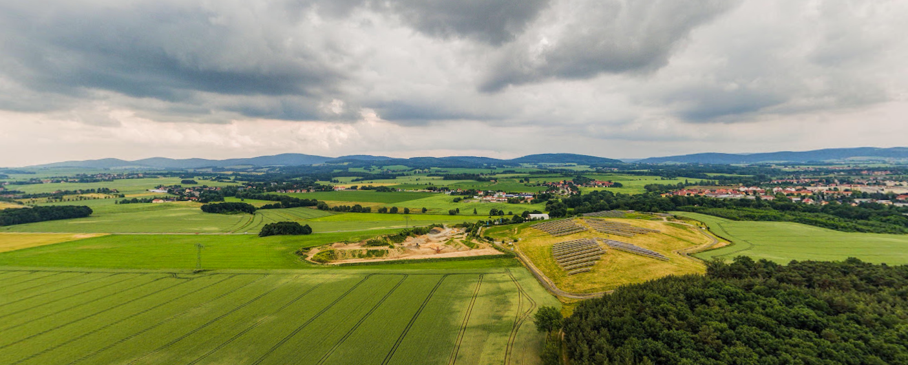
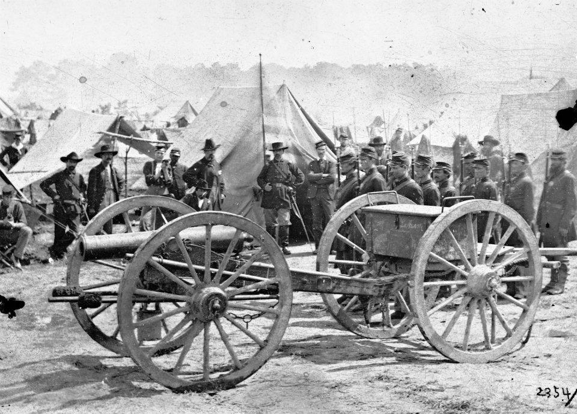
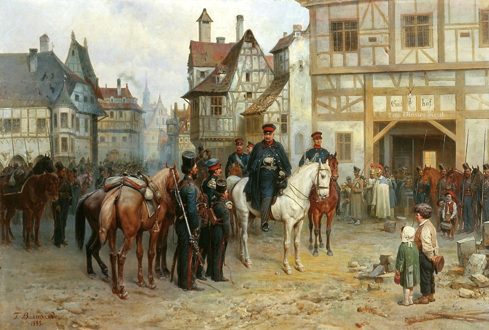
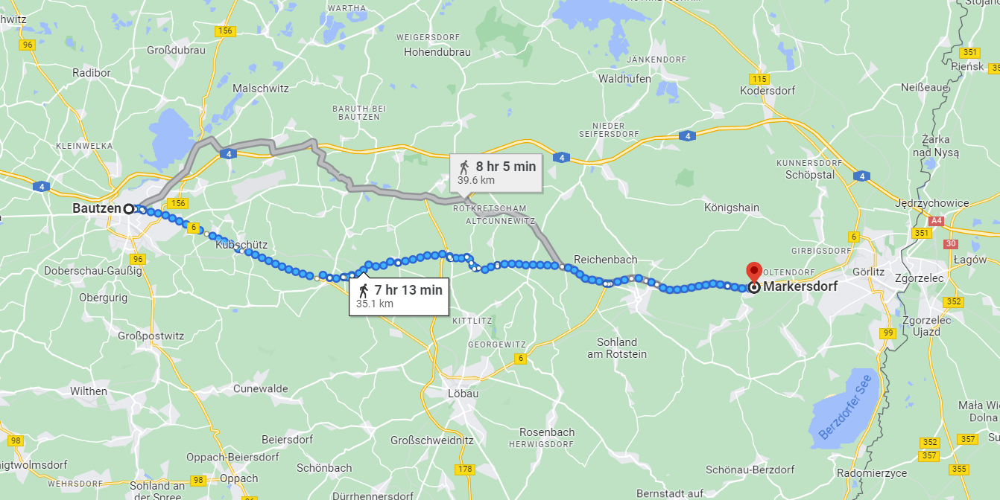
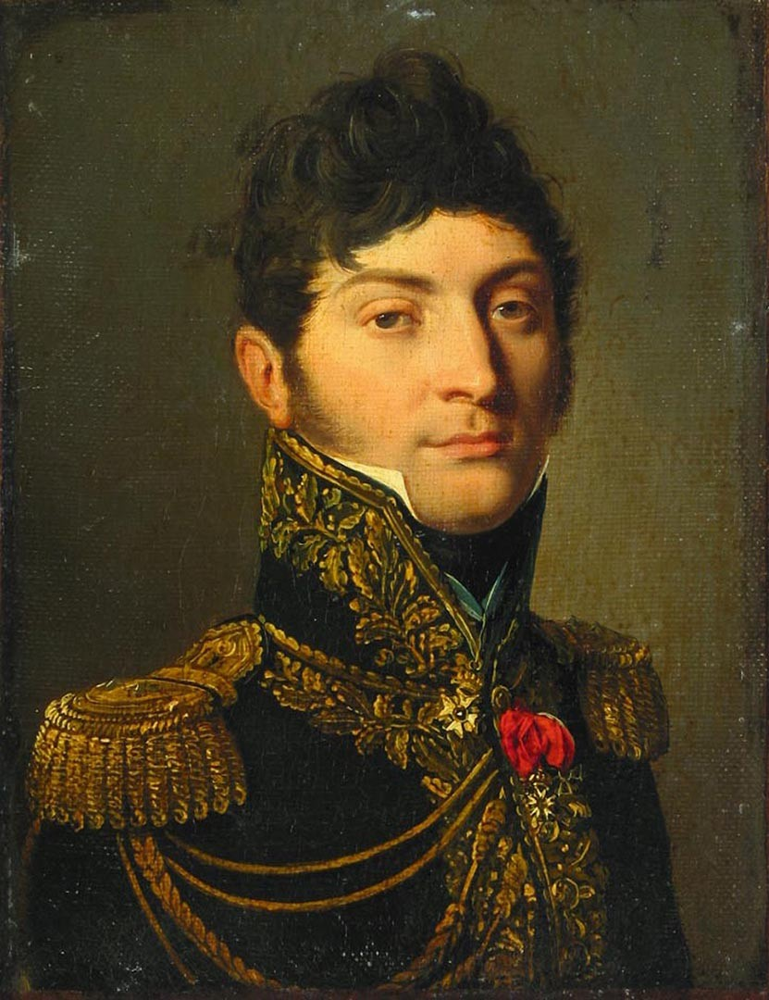
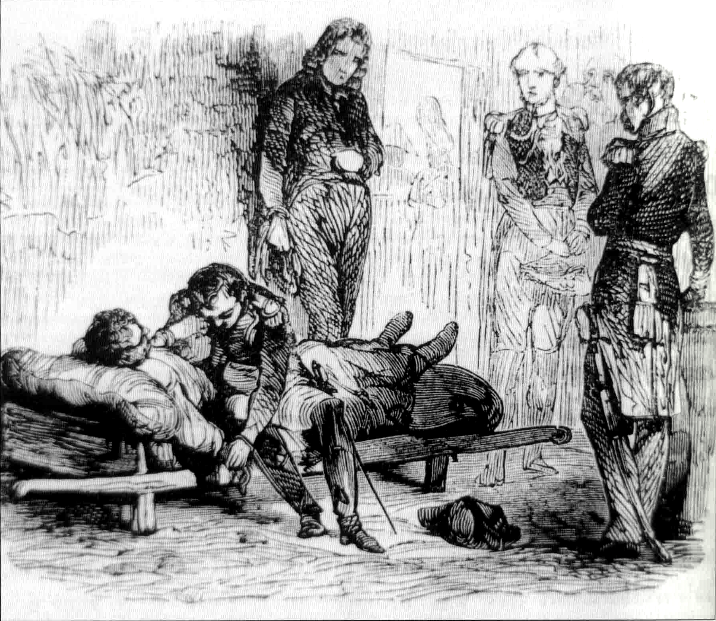

바우첸 전투 (7) - 실패의 원인
게시: 2023-05-22T06:30:26+09:00
패배가 확정되고 나서야 짜르 알렉산드르로부터 지휘권을 온전히 넘겨 받은 비운의 총사령관 비트겐슈타인은 투덜거리며 후퇴를 지휘했습니다. 다소 지나치게 꼼꼼한 작전 계획을 짜기로 악명 높았던 그는 이미 후퇴 작전에 대해서도 계획을 세워 놓고 있었습니다. 가장 북동쪽에 위치했던 바클레이의 러시아군, 중앙부의 프로이센군, 그리고 남쪽의 러시아군 본대, 이렇게 크게 3개 집단으로 수행된 후퇴 작전은 결코 쉬운 것은 아니었지만 연합군은 꽤 질서정연하게 후퇴에 성공했습니다. 이 성공은 비트겐슈타인의 능력 덕분이라기 보다는 결국 추격자의 입장인 프랑스군의 문제 덕분이었습니다. 첫째 이유는 프랑스군 자체적인 문제라기 보다는 지형 탓이 좀 있었습니다. 연합군이 바우첸 동쪽에 방어선을 꾸민 이유가 그 쪽 지형이 동쪽으로 갈 수록 고도가 조금이라도 더 높고 언덕이 많기 때문이었습니다. 비록 낮은 언덕들이었지만 그래도 나름 언덕이다보니 저지대의 프랑스군의 관측으로부터 벗어난 상태에서 연합군은 철수가 가능했습니다. 이건 결국 이 곳에 방어선을 구축하기로 했던 비트겐슈타인의 선견지명 덕분이었다고 할 수 있습니다.

(바우첸 전투에서 프랑스군 쪽 지역인 니더카이나(Niederkaina)에서 바라본 크렉비치 언덕 방향입니다. 산악 지형이 많은 한국인들이 보기엔 부럽기 짝이 없이 평원 지대이지만, 워낙 평탄한 지형이 많은 유럽인들이 보기에는 꽤 굴곡이 많아 병력이 숨기에 좋은 곳입니다.)
둘째, 나폴레옹이 막도날과 우디노 등이 지휘하는 본대의 공격을 주저했습니다. 이는 결국 네와의 연계가 제대로 되지 않았기 때문이었습니다. 나폴레옹 입장에서는 네가 프라이티츠를 점령하여 연합군 방어선이 크게 흔들리기만을 기다리고 있었습니다. 네가 어디까지 진격했는지 알지 못하는 상황에서 단단한 연합군 방어선을 정면으로 들이치다가 거센 저항에 부딪히면 그것도 난감한 일이 될 테니까요. 나폴레옹이 연합군의 후퇴를 눈치 챘을 때는 이미 때가 늦었는데, 이는 비트겐슈타인의 철수가 용의주도하게 이루어졌기 때문이기도 합니다만, 확실히 과거에 비해 나폴레옹이 다소 소심해진 탓이 있기는 했습니다. 세째, 이것이 결정적이었는데, 역시 기병과 포병 전력에 있어서 연합군이 훨씬 우월했던 점이 프랑스군의 추격을 방해했습니다. 연합군은 후퇴를 하면서도 언덕마다 강력한 포병대를 방열하고 치열한 포격을 퍼부어 프랑스군의 추격을 저지했습니다. 그런 포병대들을 엄호하기 위해서 그 옆에는 여태까지 별로 하는 일이 없었던 기병대를 포진시켜 프랑스군 보병들의 접근을 막았습니다. 프랑스군도 포병대를 동원하여 맞상대를 했지만, 포격으로 적의 전진을 막기는 쉬워도 포격으로 적의 퇴각을 저지하기는 쉽지 않은 법입니다. 또한 대포는 당연히 말로 움직이는 것이었으므로, 말의 머릿수가 부족하지 않았던 연합군은 그렇게 후위대로 배치했던 포병들을 어렵지 않게 빼낼 수 있었습니다. 현장에 있던 영국군 윌슨 장군의 기록에 따르면 연합군은 600문의 대포와 1200량의 탄약 수송차(caisson) 중 단 하나도 잃지 않고 성공적인 후퇴를 했다고 합니다. 실제로도 프랑스군이 손에 넣은 것은 파손되어 버려진 프로이센군의 대포 1문 뿐이었습니다.

(사진은 미국 남북전쟁 당시의 대포와 탄약 수송차의 모습입니다. 저렇게 대포 포가와 탄약 수송차량을 연결하여 다니는 것이 나폴레옹 당시와 크게 바뀌지 않았습니다. 나폴레옹 당시 전투에서의 전과는 적의 군기와 대포를 얼마나 많이 손에 넣느냐에 달려 있었습니다. 사상자 숫자보다 그런 것이 더 중요했던 것은 사상자 숫자는 언제나 불분명했지만 군기와 대포는 매우 명확한 숫자를 제공하는데다 적이 얼마나 무질서하게 도주했는지와 함께 아군이 전장을 완전히 장악했다는 것을 단적으로 보여주기 때문입니다.) 프랑스군에게 말이 부족하다고는 해도 기병대가 전혀 없었던 것은 물론 아니었습니다. 실제로 나폴레옹은 연합군의 후퇴를 알아채자 아껴두었던 라투르-모부르(Latour-Maubourg) 휘하의 기병 4천으로 하여금 러시아군을 추격하도록 했습니다. 그러나 훨씬 우세한 전력의 러시아 기병대들이 러시아군의 후위대를 엄호하고 있었기 때문에, 불과 몇 달 전에야 말 타는 법을 배운 서투른 기수들이 대부분이었던 라투르-모부르의 기병대는 돌격을 시도할 엄두를 내지 못했습니다. 돌격을 못하는 기병대는 아무짝에도 쓸모가 없는 법입니다. 바우첸 전투는 이렇게 다시 나폴레옹의 승리로 마무리 되었습니다만, 양측의 피해를 비교해보면 오히려 프랑스군의 피해가 더 컸습니다. 불분명한 점이 많지만 대략적으로 볼 때, 네의 병력까지 합한다면 이 날 나폴레옹의 휘하에 있던 병력은 14만5천 정도였고 연합군의 병력은 10만이 채 되지 않았습니다. 원래 사상자의 수는 참전 병력 수보다 훨씬 더 불확실한 법이지만, 대략 프랑스군의 피해는 약 1만5천~2만, 연합군의 피해는 약 1만~1만2천 정도였습니다. 원래 당시 전투에서 사상자의 숫자는 적의 포탄을 뒤집어 써가며 전진하여 공격하는 측이 더 많은 법이기는 했습니다. 그러나 궁극적으로는 승자의 사상자 수에 비해 패자의 피해가 훨씬 큰 것이 정상이었는데, 그 이유는 패배한 측의 전열이 무너져 후퇴할 때 그 순간을 기다리고 있던 승자 측의 기병대가 그 뒤를 추격하여 전과를 확대했기 때문이었습니다. 그런데 기병대의 부족으로 그런 전과 확대를 못했으니 프랑스군은 승리는 했으나 공연히 병력만 희생시켰을 뿐 아무런 성과를 내지 못한 셈이었습니다. 나폴레옹이 그런 상황을 예상하지 못한 것이 아니었습니다. 그래서 자신의 병력이 분산된다는 위험을 무릅쓰면서도 네에게 병력의 1/3 정도를 뗴어 주며 공연히 먼 길을 돌아 연합군의 후방으로 침투하도록 했던 것입니다. 그렇게 공을 들였는데도 결국 연합군은 빠져 나갔습니다. 한마디로 바우첸 전투는 나폴레옹으로서는 목적 달성에 실패한 전투였습니다. 이 실패는 대체 무엇 때문이었을까요? 많은 역사가들은 자신의 임무를 제대로 파악하지 못한 네의 실수가 가장 뼈아픈 원인이었다고 평가합니다. 네가 나폴레옹의 명령대로 오전 중에 프라이티츠를 점령하고 프로이센군의 후방을 위협했다면, 연합군은 손발이 어지러워지면서 참패했을 거라는 것이지요. 그러나 과연 그랬을까요? 보셨다시피 네가 나폴레옹의 명령을 충실히 수행했다고 하더라도, 프랑스군이 섬멸할 수 있었던 것은 1만8천 정도인 블뤼허의 프로이센군 주력부대 뿐이었습니다. 훨씬 남쪽에 있던 러시아군 본대는 물론이고, 바클레이의 러시아군이나 요크의 프로이센군 군단만 하더라도 별 어려움 없이 네의 포위망을 빠져나갈 수 있었습니다. 연합군의 20% 정도에 해당하는 병력을 포위 섬멸시켰다면 확실히 엄청난 승리라고 할 수 있지만, 그렇다고 이 전쟁을 종료시킬 정도의 성과는 아니었을 것입니다. 오후 3시에 프라이티츠가 함락된 것을 보자마자 연합군 수뇌부가 후퇴를 결심하고 즉각 행동에 옮긴 것을 보면, 블뤼허 이외의 다른 부대들은 공연히 어물쩍거리다 포위망에 걸려드는 일 없이 성공적으로 후퇴했을 것이 분명합니다.

(바우첸 시내에서의 블뤼허의 모습입니다. 크렉비츠 언덕에서 아슬아슬하게 프랑스군의 포위망을 빠져나온 이후 그는 허둥지둥 동쪽으로 후퇴하는 것이 아니라, 놀랍게도 크렉비츠 바로 남동쪽인 푸어슈비츠(Purschwitz)에서 대기하며 전투 재개 명령을 기다렸습니다. 그는 당연히 더 싸울 것을 기대했던 것입니다. 그러나 실제로는 이미 총퇴각 명령이 떨어진 뒤였고, 실제로도 프라이티츠가 프랑스군 손에 떨어진 상황에서 저지대인 푸어슈비츠는 방어전에 적합하지도 않았습니다. 마침내 연합군 사령부가 총퇴각을 명했다는 소식이 날아들자 그는 큰 마음의 상처를 입고 퇴각했는데, 그런 후퇴 도중에 그를 본 요크 장군의 참모 하나는 낙담하여 바위 위에 앉아 쉬고 있는 블뤼허의 모습이 무척이나 인상적이었다고 기록했습니다.) 애초에 기병이 부족한 상태에서 나폴레옹이 알렉산드로스 대왕식의 '망치와 모루' 작전을 실시했던 것은 가진 자원에 비해 의욕이 너무 앞서는 행동이었습니다. 명마 뷔케팔로스를 타고 달렸던 알렉산드로스 대왕과는 달리 두 발로 걸어서 연합군 후방으로 침투해야 했던 네로서는 전진 속도에 한계가 있을 수 밖에 없었습니다. 비록 기병의 기동력이 부족하다고 하더라도, 보병 병력이라도 압도적으로 우세했다면 이야기가 좀 다를 수 있었을 것입니다. 실제로 나폴레옹이 뤼첸 전투 이후 드레스덴에서 연합군과 대치하며 시간을 끌 때, 네에게 떼어준 5개 군단은 굉장히 큰 병력이었습니다. 그러나 막상 5월 21일 아침, 네가 클릭스(Klix)에 데리고 있던 병력은 2개 군단에 불과했습니다. 병력의 집중을 중요시했던 나폴레옹의 전술에 있어서 이건 큰 실책이었습니다. 그러나 이것도 따지고 보면 베를린 함락을 노릴 것인지 바우첸에 집중할 것인지를 놓고 오락가락한 나폴레옹 본인의 책임이었습니다. 네가 실수했다고 할 만한 부분은 나폴레옹이 그려놓은 큰 그림을 보지 못했다는 것이었습니다. 어떻게 보면 이것은 나폴레옹의 참모장 베르티에의 실수였습니다. 네는 북쪽 토르가우에서 내려올 때부터 나폴레옹이 진짜 원하는 것이 뭔지 정확하게 알지 못하고 단편적이고 불분명한 지시만 받았습니다. 만약 처음부터 나폴레옹이 네의 임무는 연합군 우익의 뒤를 돌아 그 퇴로를 막고 연합군의 격멸을 노리는 것이라고 말해주었다면 네가 다르게 행동했을 수도 있었습니다. 또는 처음부터 나폴레옹이 베를린을 위협하여 프로이센군의 이탈을 노린다는 1차 목표가 실패한 것을 알자마자 즉각 네와 로리스통 뿐만 아니라 레이니에 등의 군단들도 모조리 바우첸 방향으로 불러들였다면 또다른 결과가 나올 수 있었습니다. 결과적으로 네의 제3 군단과 로리스통의 제5 군단을 제외한 레이니에 등의 기타 병력은 반나절 정도 늦게 오는 바람에 바우첸 전투에 참전하지 못했습니다. 하다 못해 5월 21일 아침, 네에게 명령서를 전달할 때 크렉비츠 언덕의 프로이센 주력 부대를 포위섬멸하기 위해서는 프라이티츠에 병력을 집중시키는 것이 꼭 필요하다는 것을 조금만 더 친절하게 설명했다면 좋았을 것입니다. 하지만 만약 그런 아쉬운 점들을 제대로 했다면, 과연 바우첸 전투에서 연합군은 궤멸되었을까요? 실패의 원인을 곱씹어 보는 것은 중요합니다. 다음 번에 성공하기 위해서는 무엇을 해야 하는지를 정해야 하기 때문입니다. 그런데 의사소통 문제는 그렇다치더라도, 바우첸 작전에서의 가장 큰 문제는 말 부족으로 인한 기동성 결여였습니다. 그건 당장 어떻게 해볼 수 있는 문제가 아니었습니다. 이런 식으로 싸움을 계속 하다가는 무의미한 병력 소모만 계속 늘어날 뿐 전쟁은 끝이 날 수가 없었습니다. 이건 독일 땅에서 벌어지는 1812년 재앙의 반복이었습니다. 나폴레옹도 그걸 잘 알고 있었습니다.

(뒤록의 비극이 벌어진 마르커스도르프는 바우첸 시내에서 35~36km 떨어진 곳으로서, 보병들을 거느리고 하룻동안 무려 35km나 추격했다는 것은 나폴레옹에게 얼마나 전과 확대가 절실했는지 보여줍니다. 이런 강행군으로도 결국 연합군을 따라잡지는 못했습니다. 결국 말이든 트럭이든 전쟁은 화력이 아니라 기동력으로 하는 것입니다.) 이러는 와중에 나폴레옹 개인에게 또 하나의 비극이 벌어집니다. 느리게라도 연합군을 추격하여 다음 날인 5월 22일, 괴를리츠(Görlitz) 인근의 마르커스도르프(Markersdorf) 인근에 도착한 나폴레옹은 답이 나오지 않는 상황에 대해 고심하며 말을 몰고 있었습니다. 그런데 러시아군의 기마 포병대는 여전히 프랑스군의 추격을 견제하기 위해 가끔씩 멈춰서서 포격을 해대곤 했습니다. 그런 대포알 하나가 나폴레옹의 머리 위를 휘익 넘어 뒤쪽 어딘가에 우지끈하고 떨어졌고 행렬 뒤에서는 아우성이 벌어졌습니다. 몇 분 뒤, 장교 하나가 말을 달려와 나폴레옹에게 뒤록(Géraud Christophe Michel Duroc) 장군이 치명적인 부상을 입었다고 보고했습니다. 란 못지 않게 가까운 친구 사이였던 뒤록이 쓰러졌다는 소식에 황급히 말을 달려 되돌아간 나폴레옹의 눈에 들어온 것은 복부가 찢어져 내장이 땅바닥에 흩어진 채 쓰러져 있는 뒤록의 참혹한 모습이었습니다. 포탄이 나무 그루터기를 때린 뒤 튀어나와 공병 대장 키르제너(François-Joseph Kirgener)을 즉사시키고도 뒤록의 복부를 찢어놓고 지나갔던 것입니다. 가혹하게도, 뒤록은 끔찍한 고통을 겪으면서도 의식이 있는 상태였습니다. 뒤록은 나폴레옹이 온 것을 보고는 더 이상 모시지 못하게 되어 죄송하다면서 자신의 어린 딸의 아버지가 되어줄 것을 부탁한 뒤, 이런 험한 꼴은 보시지 않는 것이 좋다면서 자신의 임종을 지켜보지 말라고 했습니다. 뒤록은 그 이후로도 24시간 이상 끔찍한 고통을 겪은 뒤에야 사망했습니다. 나폴레옹은 가까운 친구의 참혹한 모습에 큰 충격을 받고 더 이상의 진격을 중단시켰습니다.

(뒤록은 나폴레옹보다 3세 연하로서, 사망 당시 41세의 한창 나이였습니다. 이 초상화는 그가 30대 중반일 때 그려진 것입니다. 그는 법복 귀족(noblesse de robe, 토지 소유가 아니라 관직에 있음으로써 귀족 신분을 가지는 계층) 가문 출신으로서, 원래 성은 Duroc이 아니라 du Roc이었습니다. 귀족이기 때문에 이름에 소사(particule) de가 붙었던 것입니다. 포병 학교를 다니던 그는 혁명이 일어나자 그에 순응하기 위해 이름을 du Roc에서 Duroc으로 바꾸었으나, 결국 혁명 정부에 반발하여 포병 학교를 그만 두고 왕당파군에 가담하기도 했습니다. 그러나 발미(Valmy) 전투 이후 왕당파군을 이탈하여 혁명에 가담했습니다. 그는 1796년 이탈리아를 침공하는 나폴레옹의 참모가 되면서 출세가도를 달렸습니다. 어려서부터 교육을 잘 받은 귀족 청년답게 교양과 실력이 있던 그를 나폴레옹은 무척이나 마음에 들어 했고 절대적으로 신뢰했습니다. 그는 이집트 원정 중이던 1799년 7월 아부키르 전투에서 투르크 군과 싸우다 중상을 입기도 하는 등 젊어서는 실전에도 자주 참가했으나, 그런 교양과 지성을 갖춘 인재가 부족했던 나폴레옹은 그를 전투 현장보다는 유럽 각국 왕실과 대공들을 상대해야 하는 외교 사절이나 교섭 임무에 투입했습니다. 그는 나폴레옹의 심복 중의 심복으로서, 직책은 궁정장(Grand maréchal du palais)이었습니다. 원래 이 직책은 나폴레옹이 원정에 나설 때 그의 모든 가재도구를 챙기고 식솔들을 관리하는 역할인데, 사실상 비서실장 같은 것이라고 생각하면 될 것 같습니다.)

(쓰러진 뒤록과 이야기하며 슬퍼하는 나폴레옹을 그린 모습입니다. 이 간단한 스켓치를 보면 마치 현장을 목격한 종군 화가가 그린 것 같지만 실은 루이-필립 시대의 화가 Horace Vernet의 작품입니다. 베르네는 전형적인 고전미보다는 저런 생생한 모습을 그림으로 그려내는 독창성을 추구했습니다. ) 답이 나오지 않는 상황에서 가까운 친구 뒤록까지 잃은 것이 나폴레옹의 이후 판단에 어떤 영향을 미쳤을까요? 그와는 별도로, 추격하는 나폴레옹을 뿌리치고 탈출에 성공한 연합군 수뇌부의 심정은 어떤 상태였을까요? Source : The Life of Napoleon Bonaparte, by William Milligan Sloane Napoleon and the Struggle for Germany, by Leggiere, Michael V
https://en.wikipedia.org/wiki/Battle_of_Bautzen_(1813) https://en.wikipedia.org/wiki/G%C3%A9raud_Duroc
https://thompsonsbatteryc.org/civil-war-artillery/equipment/